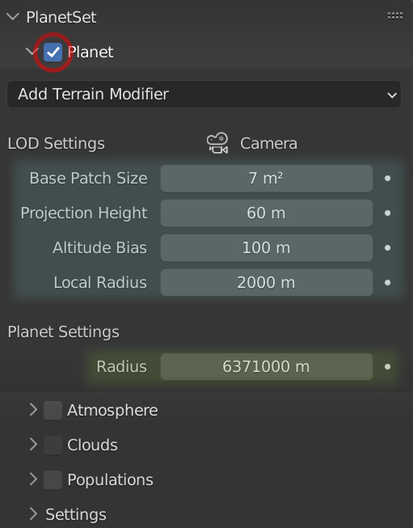
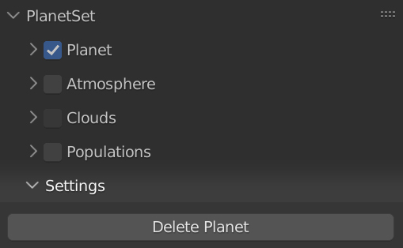

Creating a Planet Terrain
The Planet Panel is used to control the planet terrain settings and to add terrain modifier presets.

To create a planet set, enable the checkbox in the Planet Panel header. A new collection called 'Planet Collection' will be added to the scene, which is where all the generated planet content is placed. In the collection, a section of spherical planet surface called 'Planet' will be generated relative to the scene's active camera.
Note
Do not rename the collections generated by PlanetSet or move generated objects into different collections, as this will cause the references to those objects to be lost.
Level of Detail (LOD) Settings
Active Camera
The active camera name is displayed at the top of the LOD settings.
You must have an active camera in the scene for PlanetSet to generate terrain relative to. The camera in the startup scene is active by default, so you can use this.
Base Patch Size
This controls the size of the un-subdivided terrain quads. The smaller the value, the more detailed the terrain will be, but at the cost of performance.
Tip
Whilst making changes to the terrain, you may wish to keep this value relatively large to keep things running smoothly. For final quality renders, this value should be small for sufficient detail.
For production quality images the base patch size can be lowered enough to produce sub-pixel detail. This is necessary for temporal stability in animations where the camera is moving. Note that sub-pixel tessellation will require a powerful computer to run smoothly.
Projection Height
This controls the subdivision level falloff into the distance. Inreasing the height spreads the subdivision regions out further and vice versa for decreasing it. The aim is to keep the quads approximately the same size from the viewpoint of the camera as they get further away. A good way to visualise this is to go into wireframe view and change the value:
[ADD IMAGE]
For views close to the ground and with a projection height of ~60m works well. For higher shots you should refer to the camera's altitude (z coordinate). For steep terrain features, you may also want to make the value higher.
Altitude Bias
When looking over the sea you're probably aware that the higher your altitude, the further away the horizon will appear. At a view height of 1.7m (roughly the height of a person), the distance to the horizon is about 5km. At 10m, the distance is about 11km.
If the Altitude Bias property is set to 10m, then the terrain will be generated up to 11km away in all directions, since this is where the horizon will be. This is important because if the camera viewpoint is higher, the horizon will appear further away and therefore more altitude bias will be needed. Importantly, the altitude bias will generally need to be greater than the camera altitude because of terrain features that may peek over the horizon, like a mountain.
A general rule of thumb is to make sure the altitude bias is at least the camera's altitude plus the height of the tallest feature in the terrain. Note the higher the value, the a larger section of planet surface will be generated, which uses more memory.
Local Radius
This controls the size of the area around the camera which is also subdivided. It is not related to the planet radius. This is to account for terrain features that may have a significant effect on things inside the camera view. e.g. a shadow cast by a mountain behind the camera.
Planet Settings
Radius
This is the radius of the planet which alters the curvature of the surface. The default value is 6371,000m which is the radius of the Earth. Although the terrain may appear flat in the editor, it is actually patch of a large sphere which resultantly produces a horizon.
You don't really need to change this value unless you wish to mimick different planets.
Settings
To access the planet settings, expand the Settings sub panel in the PlanetSet Panel.

Delete Planet
Deletes the entire planet collection and all objects inside.
Once the planet checkbox is enabled, disabling it will only hide the planet in the viewport so that it can conveniently be hidden when needed. To actually delete the planet collection, press the Delete Planet button.